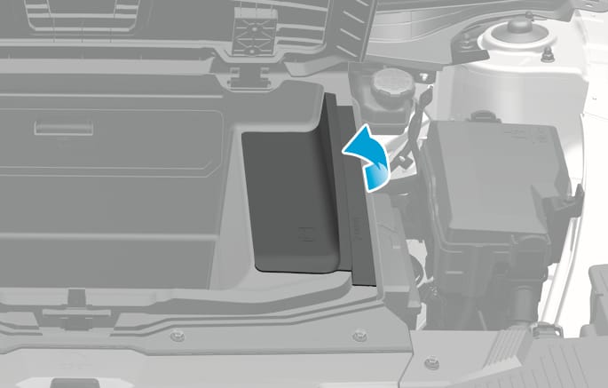
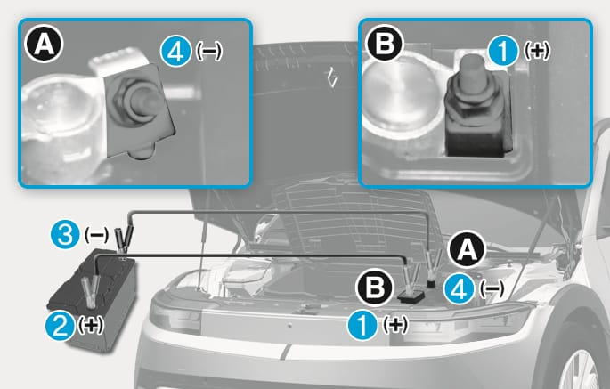

비상 시동
-
배터리를 불꽃으로부터 멀리하십시오. 배터리가 작동하는 동안 폭발성 가스가 발생합니다.
-
점프 케이블의 양극(+)과 음극(-)이 서로 닿지 않도록 하십시오. 양극과 음극이 닿으면 불꽃이 튈 수 있습니다.
-
방전된 배터리가 얼어 있거나 배터리의 전해액 양이 모자라는 경우 점프 스타트 시 배터리가 파열되거나 폭발할 수 있으므로 주의하십시오.
-
모터룸의 점프 스타트 단자를 이용한 점프 스타트에 실패해 방전된 12 V 배터리와 보조 배터리를 점프 케이블로 연결해야 하는 경우, 음극(-) 단자끼리 직접 연결하지 말고 방전된 배터리와 멀리 떨어진 차체의 견고한 금속부에 점프 케이블을 연결하십시오. 점프 케이블을 직접 연결하면 배터리가 폭발할 수 있습니다.
-
배터리 전해액이 몸이나 옷, 차체에 묻지 않도록 주의하십시오. 배터리 전해액에는 부식력이 강한 묽은 황산이 포함되어 있습니다. 배터리 전해액이 몸이나 눈에 묻은 경우 즉시 깨끗한 물로 15분 정도 씻어낸 후 의사의 진단을 받으십시오.
-
점프 스타트 시 반드시 12 V 보조 배터리를 사용하십시오. 전압이 다른 보조 배터리를 사용하면 배터리가 파열되거나 폭발할 수 있습니다.
배터리가 방전된 원인을 정확히 알 수 없는 경우 당사 직영 하이테크센터나 블루핸즈에서 차량을 점검하십시오.
-
방전된 차량의 전기 장치를 모두 끄십시오.
-
후드를 여십시오.
-
프론트 트렁크를 열고 배터리 서비스 커버를 분리하십시오.

2C_BatteryServiceCover
-
점프 케이블 양극(+) 집게의 한 쪽을 방전된 차량의 충전 단자(1)에 연결하고, 다른 한 쪽을 다른 차량이나 보조 배터리의 양극(+) 단자(2)에 연결하십시오.

2C_JumpStartOverview
-
점프 케이블 음극(-) 집게의 한 쪽을 다른 차량이나 보조 배터리의 음극(-) 단자(3)에 연결하고, 다른 한 쪽을 방전된 차량의 - 충전 단자(4)에연결하십시오.
점프 케이블 집게가 정확한 충전 단자나 접지부를 제외한 다른 어떤 곳과도 닿지 않도록 하십시오.
-
다른 차량의 배터리에 연결하는 경우, 다른 차량에 시동을 건 후 몇 분간 기다리십시오.
-
-
방전된 차량의 시동을 거십시오.
-
음극(-) 점프 케이블을 먼저 분리한 후 양극(+) 점프 케이블을 분리하십시오.
밀기 시동 방식으로는 전기차의 시동을 걸 수 없습니다.